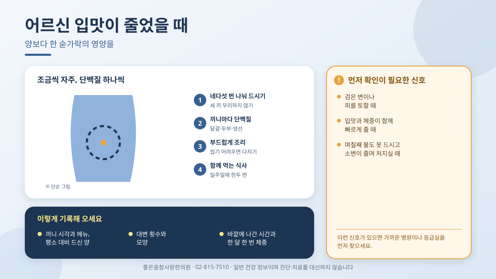

이종호 한의사 감수좋은꿈참사랑한의원 대표원장 (한의사 면허번호 19769)발행 2026-11-26 · 수정 2026-11-26
이 글의 차례
부모님 댁 냉장고를 열어 보니 지난주에 넣어 둔 반찬이 거의 그대로입니다. "입맛이 없어서 대충 먹었다"고 하시는데, 얼굴이 어쩐지 홀쭉해 보입니다. 밥공기는 예전보다 작아졌고, 그마저도 반은 남기십니다. 전화로 "밥은 드셨어요?" 하고 여쭈면 늘 "먹었지" 하시지만, 무엇을 드셨는지는 잘 말씀하지 않으십니다.
어르신의 입맛 이야기는 진료실에서 자녀분들이 먼저 꺼내시는 경우가 많습니다. 어르신 본인은 "나이 들면 덜 먹는 거지" 하고 대수롭지 않게 여기시는데, 곁에서 지켜보는 가족은 마음이 쓰입니다. 그 걱정이 맞을 때가 많습니다.
나이가 들면 입맛과 식사량이 조금씩 줄어드는 것은 자연스러운 변화입니다. 하지만 몇 주 사이에 눈에 띄게 줄었거나, 체중이 빠지고 기운이 떨어졌다면 이유를 찾아봐야 합니다. 어르신은 적게 드시는 날이 이어지면 근육이 빠르게 줄고, 기운이 떨어지면서 넘어짐과 감기에도 약해지기 쉽기 때문입니다.
이 글에서는 어르신 입맛이 왜 줄어드는지, 무엇부터 확인해야 하는지, 가족과 함께 식탁에서 바꿔 볼 수 있는 것은 무엇인지를 차례로 정리했습니다.
어르신의 입맛은 어떻게 줄어드나요?
입맛이 줄어드는 모습은 분들마다 다릅니다. 배가 고프다는 느낌 자체가 잘 들지 않는다는 분, 조금만 먹어도 금세 배가 부르다는 분, 맛이 예전 같지 않아 먹는 재미가 없다는 분이 계십니다. 고기나 채소처럼 씹어야 하는 음식은 피하고, 죽이나 국에 만 밥처럼 부드러운 것만 찾으시기도 합니다.
끼니를 거르는 일도 늘어납니다. 아침은 커피와 빵 한 조각으로, 점심은 늦게 대충, 저녁은 입맛이 없다며 건너뛰는 식입니다. 혼자 지내시는 분일수록 차려 먹는 일이 번거로워 간단한 것으로 때우기 쉽습니다.
가족이 먼저 알아채는 신호는 대개 바지 허리가 헐렁해진 것, 얼굴이 홀쭉해진 것, 걸음이 느려지고 자주 앉아 쉬시는 것입니다. 냉장고 속 반찬이 줄지 않는 것도 중요한 단서가 됩니다.
왜 나이가 들면 입맛이 줄어들까요
나이가 들면 맛과 냄새를 느끼는 감각이 조금씩 무뎌집니다. 특히 냄새를 맡는 힘이 줄면 음식 맛이 밋밋하게 느껴집니다. 그래서 자꾸 짜고 단 음식을 찾게 되거나, 반대로 먹는 즐거움을 잃고 식사량이 줄기도 합니다.
위가 음식을 받아들이고 내려보내는 속도도 느려집니다. 조금만 먹어도 배가 부르고 더부룩한 느낌이 오래 갑니다. 장의 움직임이 느려져 변비가 생기면 배가 늘 차 있는 것 같아 입맛이 더 떨어집니다.
치아와 틀니도 큰 몫을 합니다. 잇몸이 아프거나 틀니가 잘 맞지 않으면 씹는 것 자체가 힘들어 먹는 양이 줄어듭니다. 입이 자주 마르는 분도 음식을 넘기기 어려워 식사를 꺼리게 됩니다.
드시는 약도 입맛에 영향을 줍니다. 여러 약을 함께 드시면 입이 마르거나 입맛이 쓰거나 속이 메스꺼울 수 있습니다. 새 약을 시작한 뒤부터 입맛이 줄었다면 그 연결을 처방한 선생님과 상의해 보시길 권합니다.
마음도 입맛과 이어져 있습니다. 배우자를 먼저 보내셨거나, 혼자 드시는 식사가 길어지거나, 몸이 예전 같지 않아 서글프실 때 입맛이 먼저 사라지곤 합니다. 어르신의 우울은 기분보다 입맛과 잠, 기운의 변화로 먼저 드러나는 경우가 많습니다.
자연스러운 변화와 살펴야 할 식욕 저하는 어떻게 다를까요?
자연스러운 변화는 몇 달, 몇 년에 걸쳐 조금씩 양이 줄되 체중과 기운은 크게 달라지지 않는 경우입니다. 끼니를 거르지 않고, 단백질 반찬도 조금씩 드시며, 일상생활을 이어 가신다면 크게 걱정하지 않으셔도 됩니다.
살펴야 할 식욕 저하는 몇 주 사이에 눈에 띄게 줄었거나, 체중이 빠지고 있거나, 기운이 떨어져 자꾸 누우려 하시는 경우입니다. 대략 반년 사이 평소 체중의 5퍼센트 넘게 빠졌다면 원인을 확인해 보는 것이 좋습니다.
입맛 저하와 함께 속쓰림, 명치 통증, 검은 변, 삼킴 불편, 기침이나 열이 있다면 위장이나 다른 내과 질환을 먼저 확인해야 합니다. 갑상선, 당뇨, 빈혈, 신장 기능의 변화도 입맛을 떨어뜨릴 수 있어 정기 검진 결과를 함께 보시길 권합니다.
스스로 살펴볼 수 있는 점
아래 질문에 답해 보시면 어디서부터 살펴야 할지 짐작하는 데 도움이 됩니다. 가족이 함께 답해 주셔도 좋습니다.
- 최근 몇 달 사이 체중이 얼마나 변했나요?
- 하루 세 끼 가운데 거르는 끼니가 있나요?
- 씹거나 삼킬 때 불편하거나 틀니가 맞지 않나요?
- 조금만 먹어도 배가 부르거나 더부룩한가요?
- 최근 새로 시작한 약이 있나요?
- 혼자 드시는 날이 많거나 기분이 가라앉아 계신가요?
이 가운데 어느 쪽에 해당하는지에 따라 치과, 내과, 정신건강의학과처럼 먼저 들러야 할 곳이 달라지기도 합니다. 진료실에서는 이 갈래를 함께 나눠 보는 것부터 시작합니다.
입맛 이야기에서 자주 헷갈리는 것
첫째, 살이 조금 빠지는 건 오히려 몸에 좋다는 생각입니다. 젊을 때와 달리 어르신의 체중 감소는 지방보다 근육이 먼저 빠지는 경우가 많습니다. 근육이 줄면 다리 힘이 약해지고 넘어지기 쉬워지며, 감기 같은 작은 병에서도 회복이 더뎌집니다.
둘째, 죽이 속에 편하니 죽만 드시면 된다는 생각입니다. 죽은 넘기기 쉽고 속이 편하지만, 같은 양의 밥보다 영양이 묽습니다. 죽을 드시더라도 달걀, 다진 고기, 두부, 생선살을 넣어 단백질을 보태 드리시길 권합니다.
셋째, 입맛이 없을 때는 드시고 싶은 것만 드시면 된다는 생각입니다. 입맛을 되찾는 데는 좋아하시는 음식이 큰 힘이 되지만, 단 과자나 빵, 떡만으로 끼니를 채우면 금세 배가 부르고 단백질이 모자라게 됩니다. 좋아하시는 음식 곁에 단백질 반찬 하나를 함께 놓아 드리면 됩니다.
넷째, 어르신이 괜찮다고 하시면 괜찮은 것이라는 생각입니다. 어르신들은 자녀에게 걱정을 끼치기 싫어 불편을 줄여 말씀하시는 경우가 많습니다. 말씀보다 냉장고와 체중계, 바지 허리가 더 정확한 이야기를 해 줄 때가 있습니다.
먼저 이렇게 여쭙니다
처음 오시면 저는 대략 이런 순서로 여쭙니다.
- 식사량이 줄어든 것은 언제부터이고, 계기가 될 만한 일이 있었나요?
- 어제 하루 무엇을 언제 얼마나 드셨나요?
- 체중이 변했다면 얼마나, 어느 기간에 변했나요?
- 대변은 며칠에 한 번, 어떤 모양으로 보시나요?
- 잠은 어떠시고, 낮에는 무엇을 하며 보내시나요?
- 드시는 약은 무엇이고, 최근 바뀐 약이 있나요?
정확히 기억나지 않으셔도 괜찮습니다. 약 봉투와 최근 건강검진 결과지를 챙겨 오시면 그것만으로도 이야기를 충분히 시작할 수 있습니다.
일상에서 먼저 해 볼 수 있는 것
입맛이 없는 어르신께 "많이 드세요"라는 말은 부담이 되기 쉽습니다. 양을 늘리기보다 한 숟가락에 담기는 영양을 늘리는 쪽으로 생각해 보세요.
- 세 끼를 무리하게 채우기보다 조금씩 네다섯 번 나눠 드시기
- 끼니마다 달걀, 두부, 생선, 고기 같은 단백질 반찬 하나씩
- 밥은 조금 줄이더라도 반찬부터 먼저 드시기
- 씹기 어려우시면 다지거나 부드럽게 익혀 드리기
- 식사 직전에 물을 많이 드시지 않기
- 식사 뒤 가볍게 걷거나 몸 움직이기
단백질은 어르신 근육을 지키는 재료입니다. 입맛이 없을 때는 달걀찜, 두부조림, 생선살, 연두부, 우유나 두유처럼 부드럽고 넘기기 쉬운 것부터 시작하시면 됩니다. 국물에 만 밥만 드시는 날에는 국에 달걀을 풀거나 두부를 넣어 드리는 것도 방법입니다.
맛이 밋밋하게 느껴지신다면 소금을 늘리기보다 향과 색을 더해 보세요. 들기름, 참깨, 파, 생강, 레몬 같은 향이 입맛을 깨우는 데 도움이 됩니다. 알록달록한 반찬을 작은 접시에 담아 드리면 눈으로 먼저 입맛이 돕니다.
식사 전에 가볍게 몸을 움직이시면 배고픈 느낌이 돌아오는 데 도움이 됩니다. 오전 산책이나 집 앞 장보기처럼 짧은 외출만으로도 점심 입맛이 달라질 수 있습니다. 하루 종일 집에 앉아 계시면 배도 잘 고프지 않습니다.
입안과 물도 함께 살펴 주세요
입안이 불편하면 입맛보다 먼저 손이 수저에서 멀어집니다. 잇몸이 붓거나 입안이 헐었는지, 혀가 하얗게 덮였는지, 틀니 자리가 빨갛게 쓸렸는지 가끔 들여다봐 주세요. 양치와 틀니 세척을 챙기는 것만으로도 음식 맛이 한결 살아나는 경우가 있습니다.
어르신은 목마름을 덜 느끼셔서 물을 적게 드시는 경우가 많습니다. 몸에 물이 모자라면 입이 마르고 변이 굳어 배가 늘 묵직하고, 그만큼 입맛도 떨어집니다. 끼니 사이에 보리차나 미지근한 물을 조금씩 자주 드시도록 곁에 두어 주세요.
가족은 어떻게 도울 수 있을까요?
가장 큰 도움은 함께 먹는 식사입니다. 혼자 드시는 밥은 양도 줄고 내용도 단조로워지기 쉽습니다. 일주일에 한두 번이라도 함께 식사하거나, 영상 통화를 하며 같이 밥을 먹는 것만으로도 드시는 양이 달라지는 경우가 있습니다.
반찬을 해 드릴 때는 큰 통보다 한 번 먹을 만큼 작은 통에 나눠 담아 드리세요. 꺼내서 바로 드시기 쉽고, 몇 통을 드셨는지 가족이 확인하기도 쉽습니다. 냉동해 두었다가 데워 드실 수 있는 단백질 반찬을 몇 가지 준비해 두시면 좋습니다.
정기적으로 체중을 함께 재 보시길 권합니다. 한 달에 한 번, 같은 시각에 같은 저울로 재어 달력에 적어 두면 변화를 빨리 알아챌 수 있습니다. 동네 복지관이나 지역의 어르신 식사 지원 사업이 있는지 알아봐 드리는 것도 도움이 됩니다.
한의원에서 함께 살필 수 있는 경우
- 조금만 먹어도 배가 부르고 더부룩한 느낌이 오래가는 경우
- 입맛이 없고 기운이 떨어져 자꾸 누우려 하시는 경우
- 손발이 차고 배가 차며 묽은 변이나 변비가 번갈아 오는 경우
- 큰 병을 앓거나 입원했다가 회복하는 동안 입맛이 돌아오지 않는 경우
- 내과 검사에서 특별한 이상이 없다는데 식사량이 계속 적은 경우
좋은꿈참사랑한의원에 오시면 맥을 짚고 배를 만져 보며 소화의 흐름을 살핍니다. 잠과 대소변, 손발의 온도, 기분도 함께 여쭙습니다. 그 내용을 바탕으로 생활에서 바꿔 볼 것 하나와 함께 침, 배를 따뜻하게 하는 온열 관리, 한약 상담 가운데 지금 상태에 맞는 것을 진찰한 뒤 정합니다.
어르신은 여러 약을 함께 드시는 경우가 많아, 한약을 상의할 때는 드시는 약을 모두 확인하고 더욱 신중하게 정합니다. 드시던 약은 처방한 선생님과 상의 없이 멈추지 않으시고, 내과 진료와 한의원 진료는 나란히 이어 가실 수 있습니다.
이렇게 기록해 오시면 상담이 쉬워집니다
식사는 기억보다 기록이 정확합니다. 2주 정도 가족이 함께 적어 주셔도 좋습니다.
- 끼니 시각과 대략의 메뉴, 드신 양(평소의 몇 분의 몇)
- 간식과 우유, 두유처럼 끼니 사이에 드신 것
- 대변 횟수와 모양
- 바깥에 나간 시간과 걸은 정도
- 한 달에 한 번 체중
기록을 나란히 놓고 보면 함께 먹은 날, 바깥에 나간 날 드시는 양이 늘어나는 흐름이 보이곤 합니다. 그 흐름이 가족이 무엇을 도와드리면 좋을지 알려 주는 실마리가 됩니다.
한 숟가락의 힘
어르신의 입맛은 하루아침에 돌아오지 않습니다. 대신 한 숟가락씩, 한 끼씩 쌓아 가면 기운과 걸음이 따라 달라지는 경우가 많습니다. 많이 드시게 하려 애쓰기보다 즐겁게 드실 수 있는 자리를 만들어 드리는 것이 먼저입니다.
이번 주에는 끼니마다 단백질 반찬 하나 더하기, 혹은 일주일에 한 번 함께 식사하기 가운데 하나만 시작해 보세요. 다음에 오시면 2주 동안의 식사 기록부터 함께 펼쳐 보겠습니다.
이런 증상은 먼저 확인이 필요합니다
- 검은 변이나 피를 토하는 일이 있으면서 입맛과 체중이 함께 빠르게 줄어드는 경우
- 며칠째 물도 거의 못 드시고 소변이 줄며 기운 없이 처지시거나 정신이 흐려지시는 경우
이런 신호가 있으면 한의원보다 가까운 병원이나 응급실을 먼저 찾으세요.
함께 읽으면 좋은 글
- 입맛이 없고 밥이 잘 넘어가지 않는 성인 식욕부진은 어떻게 살피나요?
- 어르신이 기운이 없고 자꾸 눕고만 싶어 하실 때는 무엇을 살피나요?
- 다리 힘이 빠지고 걸음이 느려지는 근감소증은 어떻게 살피나요?
- 다이어트를 하지 않았는데 체중이 계속 줄 때는 어떤 검사부터 받고 무엇을 살피나요?
- 어르신이 말수가 줄고 외로움과 우울이 길어질 때, 가족은 무엇을 살피면 좋을까요?

여쭙는 것
- 식사량이 줄어든 것은 언제부터이고, 계기가 될 만한 일이 있었나요?
- 어제 하루 무엇을 언제 얼마나 드셨나요?
- 체중이 변했다면 얼마나, 어느 기간에 변했나요?
생활에서 해 볼 것
- 세 끼를 무리하게 채우기보다 조금씩 네다섯 번 나눠 드시기
- 끼니마다 달걀, 두부, 생선, 고기 같은 단백질 반찬 하나씩
- 밥은 조금 줄이더라도 반찬부터 먼저 드시기
한의원에서 함께 살필 것
- 조금만 먹어도 배가 부르고 더부룩한 느낌이 오래가는 경우
- 입맛이 없고 기운이 떨어져 자꾸 누우려 하시는 경우
- 손발이 차고 배가 차며 묽은 변이나 변비가 번갈아 오는 경우
먼저 확인이 필요한 신호
- 검은 변이나 피를 토하는 일이 있으면서 입맛과 체중이 함께 빠르게 줄어드는 경우
- 며칠째 물도 거의 못 드시고 소변이 줄며 기운 없이 처지시거나 정신이 흐려지시는 경우
한눈에 보는 표
| 구분 | 핵심 |
|---|---|
| 여쭙는 것 | 식사량이 줄어든 것은 언제부터이고, 계기가 될 만한 일이 있었나요? 어제 하루 무엇을 언제 얼마나 드셨나요? |
| 생활에서 해 볼 것 | 세 끼를 무리하게 채우기보다 조금씩 네다섯 번 나눠 드시기 끼니마다 달걀, 두부, 생선, 고기 같은 단백질 반찬 하나씩 |
| 한의원에서 함께 살필 것 | 조금만 먹어도 배가 부르고 더부룩한 느낌이 오래가는 경우 입맛이 없고 기운이 떨어져 자꾸 누우려 하시는 경우 |
| 먼저 확인이 필요한 신호 | 검은 변이나 피를 토하는 일이 있으면서 입맛과 체중이 함께 빠르게 줄어드는 경우 며칠째 물도 거의 못 드시고 소변이 줄며 기운 없이 처지시거나 정신이 흐려지시는 경우 |
자주 묻는 질문
나이가 들면 덜 먹는 게 당연하지 않나요?
조금씩 줄어드는 것은 자연스러운 부분이 있습니다. 다만 몇 주 사이 눈에 띄게 줄었거나 체중과 기운이 함께 떨어진다면 이유를 찾아보시길 권합니다.
영양 음료를 드시게 해도 되나요?
끼니를 대신하기보다 끼니 사이에 보태는 용도로 쓰시면 도움이 될 수 있습니다. 당뇨나 신장 질환이 있으시면 처방한 병원과 종류를 상의해 보세요.
입맛 돋우는 한약이 있나요?
입맛이 줄어든 이유가 사람마다 달라서 진찰한 뒤 정합니다. 드시는 약을 모두 확인하고 신중하게 상의하며, 원인 확인이 먼저 필요하면 내과를 먼저 안내합니다.
틀니가 잘 안 맞으시는데 그것도 상관이 있나요?
씹기가 불편하면 드시는 양과 종류가 크게 줄어듭니다. 치과에서 틀니와 잇몸 상태를 먼저 살펴보시고, 그사이에는 부드럽게 조리한 단백질 반찬으로 채워 드리세요.
좋은꿈참사랑한의원은 재진 때 지난번 이야기부터 이어서 여쭙니다. 진료시간과 예약은 오시는 길에서 확인하세요.
어디서 상담받을 수 있나요?
좋은꿈참사랑한의원은 서울 동작구 만양로2길 2 신성빌딩 3층·5층(서울 동작구 상도동, 7호선 상도역 3번 출구 근처)에 있습니다. 한의사 3명(이종호 대표원장, 조영기 수석진료원장, 정원영 진료원장)이 진료합니다. 진료시간은 평일 09:30~20:00(점심 13:00~14:00), 토·일·공휴일 09:30~15:00이며, 방문 전 전화로 확인을 권합니다. 예약은 네이버 예약, 카카오톡 상담, 전화 02-815-7510로 받습니다.
이 글은 일반적인 건강 정보이며 개인의 진단이나 치료를 대신하지 않습니다. 증상이 있거나 복용 중인 약이 있다면 진료를 통해 확인하세요. 치료 효과는 개인마다 다를 수 있습니다.
작성 기준: 일반적으로 알려져 있는 건강 정보를 참고해 정리했습니다(대표원장 감수). 증상 기록은 1~2주 동안 하루 1회, 비슷한 시간에 적어 오시면 지난 상태와 비교하기 쉽습니다.